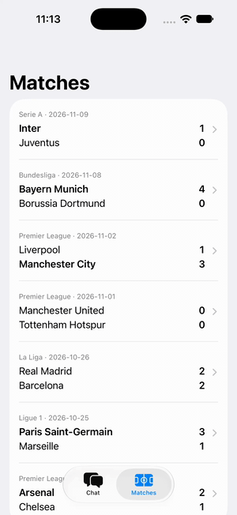
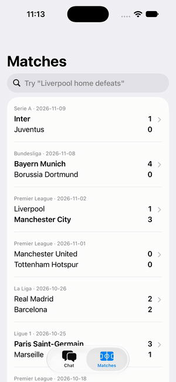
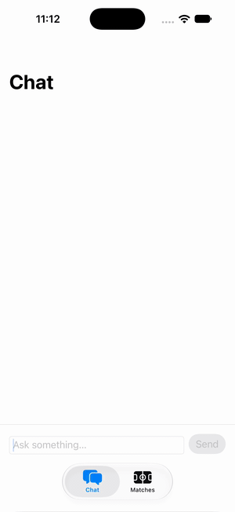

I build iOS apps that last, and AI features you can trust.
10+ years shipping production iOS apps in gaming, public safety, fintech and education with Swift, SwiftUI and UIKit. Lately: LLM features that are validated in code, measured and still work offline.
actor ConnectionStore {
private var state: State
func stream() async throws {
// small interfaces,
// predictable behaviour
}
}
Scroll to explore ↓
Swift
SwiftUI
Swift Concurrency
UIKit
TCA
GraphQL
LLM Integration
Swift Testing
Modular Architecture
10+years shipping production iOS apps
32% → 53%app-wide test coverage, in an effort I initiated and led
Swift 6migration of an app and its packages to strict concurrency
4industries: gaming, public safety, fintech, education
Selected engineering work
Problems I like solving.
01
Server-driven navigation, shared across apps
Built server-driven navigation in SwiftUI and extracted it into a shared Swift Package, reused across multiple localized sportsbook and gaming apps with content managed in the ContentStack headless CMS.
SwiftUISPMServer-driven UIHeadless CMS
02
Raising test coverage from 32% to 53%
Initiated and led an app-wide testing effort: planned and wrote unit tests across app features and expanded UI tests for key user flows, so the team can change code with confidence.
XCTestSwift TestingXCUITest
03
Migrating to Swift 6
Helped migrate the app and its Swift packages from Swift 5 to Swift 6, resolving concurrency errors, actor isolation issues and Sendable conformance problems.
Swift 6ActorsSendableStrict Concurrency
04
Real-time WebSocket client
Designed a modular WebSocket layer on URLSessionWebSocketTask, Swift Concurrency and AsyncSequence: a reusable foundation for real-time features, first used to show live promotional messages.
WebSocketsAsyncSequenceArchitecture
05
Legacy architecture modernization
Moved lifecycle responsibilities from AppDelegate to UIScene, broke a monolithic app-flow manager into small testable components, and led MVC → MVVM migrations across Swift and Objective-C code.
UIKitObjective-CMVVMRefactoring
06
Secure mobile payments
Delivered split payments in a consumer payments app, maintained the company's payment SDK, and implemented certificate pinning, AES encryption for local data and RSA encryption for API payloads.
SecurityAES / RSAPayment SDKRealm
07
AI-assisted dependency reviews
Automated Swift Package dependency reviews with Python and Codex, collecting available updates and compatibility risks into a single Slack report so the team can prioritise upgrades.
PythonCodexAutomationSlack
08
Releases, observability and mentoring
Coordinate releases as Release Captain (readiness, tags, TestFlight builds, post-release crash monitoring), built New Relic dashboards for feature performance, and mentor new iOS developers as an onboarding buddy.
A SwiftUI football app with three AI features: match summaries, natural-language search and a streaming chat assistant. It's built to show what shipping an LLM feature takes beyond the API call: structured output, validation, guardrails, fallbacks, evals and latency measurement.

Match summary

Smart search

Streaming chat
Structured output, validated in code. Answers are JSON constrained by a schema, then decoded and checked (bullet count, length, real players) before anything is shown.
The AI never invents results. Search turns “Liverpool home defeats” into typed filters; plain Swift does the filtering, with a keyword fallback if the model fails.
Guardrails and evals. Versioned prompt files tested against off-topic, betting and prompt-injection inputs, including held-out cases.
Resilient by design. Retries with exponential backoff and Retry-After, model fallback, then Apple's on-device Foundation Models when offline.
Measured. Time to first token and total latency logged for every request.
// LLMKit: each wrapper adds one behaviour
// behind the same LLMProviding protocollet llm = LatencyMeasuringClient(
wrapping: FallbackLLMClient(
primary: LLMClient(/* Gemini, retries */),
fallback: OnDeviceLLMClient()
)
)
Sportsbook and gaming apps across multiple markets. Built server-driven navigation as a shared Swift Package, helped migrate to Swift 6, led the push from 32% to 53% test coverage, built a real-time WebSocket client, and act as Release Captain and onboarding mentor.
2022 — 2023
Motorola Solutions Senior iOS Developer
A public-safety app giving first responders real-time incident information. Migrated major features from MVC to MVVM with unit tests, delivered redesigned login and sign-up flows, and added SwiftLint and SwiftFormat checks to CI.
2020 — 2022
Foree Senior iOS Developer
A consumer payments app for transfers, payments and messaging. Delivered split payments, maintained the payment SDK, secured the app with certificate pinning and AES/RSA encryption, and introduced SwiftLint, dependency injection and protocol-oriented design.
2015 — 2020
Kiddom iOS Developer → Senior iOS Developer
A K-12 education platform for teachers, students and administrators. Integrated WebRTC audio/video calls and chat, led MVC → MVVM migration with ~60% coverage in migrated areas, and moved storyboards to programmatic UIKit with SnapKit. Promoted to Senior in 2019.
About
Engineering beyond the feature.
I’m an iOS developer who enjoys the parts around feature delivery too: shaping API contracts, untangling architecture, raising test coverage, investigating production issues and making releases predictable.
I use agentic AI tools in my daily work, build LLM-driven features, and have worked with distributed teams on consumer, gaming, public-safety, fintech and education products.
Core stack
Swift / SwiftUI / UIKit / Objective-C
Swift Concurrency / Combine
MVVM / TCA / Modular architecture
REST / GraphQL (Apollo) / WebSockets
Gemini API / Foundation Models / Evals
XCTest / Swift Testing / XCUITest
SPM / Fastlane / CI/CD / TestFlight
New Relic / Firebase Crashlytics
Let’s build something good
Looking for my next iOS challenge.
Interested in Senior iOS Developer roles where product thinking and engineering quality both matter. Based in Kraków and a Polish EU Blue Card holder, so no separate work permit is needed for qualifying roles in Poland.